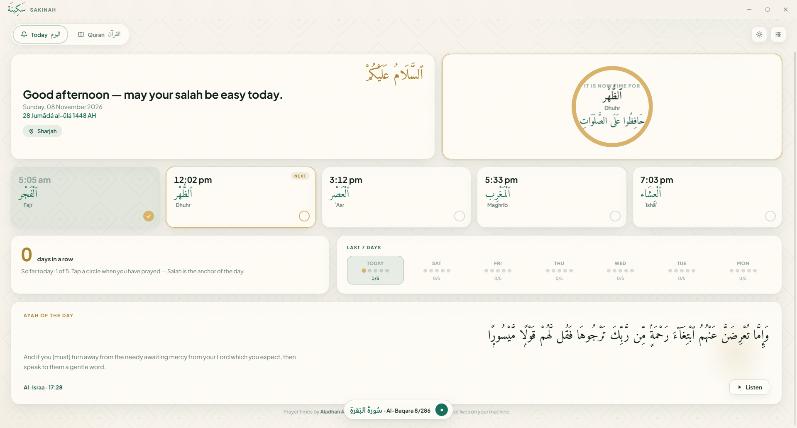
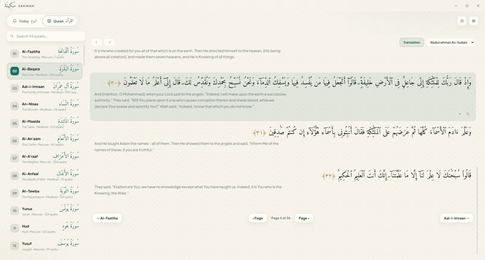

ٱلسَّلَامُ عَلَيْكُمْ
A calm Quran & salah companion
for your Windows desktop
The whole Quran lives on your computer — open Sakinah and read, even offline. A gentle notification arrives at every prayer time, even while Sakinah rests in your tray. Tick off each salah and watch your streak grow, quietly.
Free forever · no account · nothing is sent anywhere. After the link works, verify your copy with the SHA-256 checksum below.
Full checksum: 2891B1067A945591FF037DD6037773DB5F14D673D1946E71CE26EB9DCFC1262D
Look inside
Real screenshots — nothing mocked up.


What's inside
The whole Quran, offline
All 114 surahs are bundled with the app in the Uthmani script and English translation — the text and the beautiful Amiri mushaf font never need the internet.
Read the way you like
Mushaf-style flip pages (arrow keys work too) or free scrolling — switch anytime. Flip past the last page and you continue straight into the next surah.
Six famous reciters
Al-Afasy, Abdul Basit, As-Sudais, Ash-Shatri, Al-Husary, Al-Minshawi. Play ayah by ayah from any spot — and a little bar at the bottom always shows what's playing with a Stop you can reach.
Gentle prayer reminders
A calm notification at Fajr, Dhuhr, ʿAsr, Maghrib and ʿIshāʾ — on time, or a few minutes before. They fire even when the window is closed to the tray. You control it all from Windows.
Selah check-offs & streaks
Tap a chip when you've prayed. Your day counts up, a 7-day grid remembers your week, and a streak shows how steady your days have become. It all stays on your PC.
Made for calm
Light and dark themes that follow Windows, Hijri and Gregorian dates, an Ayah of the day chosen just for you, and an ayah card you can listen to with one press.
Install in three steps
Download
Click the green Download button above. You'll get Sakinah-Setup-1.1.0.exe — one file, no admin rights needed.
Run it
Double-click the file. If Windows shows "Windows protected your PC", click More info → Run anyway. That warning appears only because the installer isn't digitally signed — small developers skip the paid certificate, the app itself is safe.
Done
Sakinah installs under your own user folder and opens right away, with a desktop and Start-menu shortcut. It detects your city automatically for prayer times — you can set your city manually and pick your calculation method in Settings ⚙.
It runs quietly in the tray when you close the window — prayer reminders keep working. Right-click the tray icon to quit fully.
Questions people ask
Is it really free?
Yes, completely. The Quran text comes from the AlQuran Cloud project, prayer times from the Aladhan project, recitation audio from the islamic.network CDN — all free public services. Sakinah asks for nothing: no sign-up, no key, no payment, no data collection.
Does it work without the internet?
Reading the Quran works fully offline — every surah, translation and font is bundled with the app. Prayer times, location detection and recitation audio use the internet (prayer times are cached, and remain available briefly if you go offline).
Where does my check-off history live?
Only on your own computer, in your user profile. Nothing is uploaded to any server — the app doesn't even have an account system.
Why does Windows warn me about the installer?
Because it isn't code-signed — a paid certificate that big companies buy. Many small, honest apps ship unsigned. You can confirm your download matches the SHA-256 checksum shown near the top of this page.
Is there an Android version?
Yes! The 📱 Download for Android button above gives you Sakinah-Android-1.1.0.apk (5.7 MB). Open it on your phone; if Android says "unknown apps", choose Allow / Install anyway — normal for APKs installed outside the Play Store. All 114 surahs work offline on the phone too.
How do I update it?
Download the newest installer from this page and run it — it replaces the old version in place. Your salah check-offs and settings are kept.